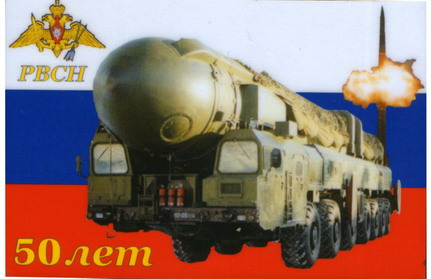
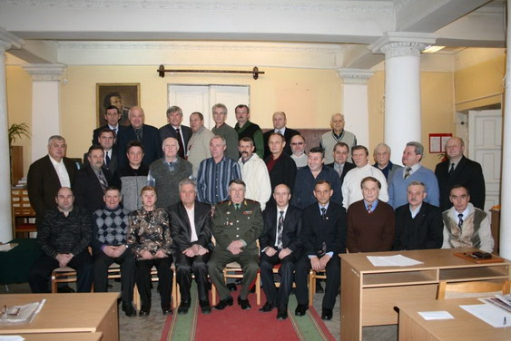

| 
17 декабря 2009 года исполняется 50 лет со дня образования Ракетных войск стратегического назначения
Именно в этот день вышло Постановление Совета Министров СССР № 1384-615, закрепившее решение о создании нового вида Вооруженных Сил. Сейчас РВСН род войск Вооруженных Сил Российской Федерации, главный компонент ее стратегических ядерных сил. Они предназначены для ядерного сдерживания возможной агрессии и поражения в составе стратегических ядерных сил или самостоятельно массированными, групповыми или одиночными ракетно-ядерными ударами стратегических объектов, находящихся на одном или нескольких стратегических воздушно-космических направлениях и составляющих основу военных и военно-экономических потенциалов противника.
В настоящее время на вооружении РВСН состоит шесть типов ракетных комплексов четвертого и пятого поколений. Из них четыре – шахтного базирования с МБР РС-18, РС-20Б, РС-20В, РС-12М2 и два – мобильного грунтового базирования с МБР РС-12М, РС-12М2. Ракетные комплексы шахтного базирования по количеству пусковых установок составляют 45 % ударной группировки РВСН, а по количеству боевых блоков – почти 85 % ее ядерного потенциала.
С 1960 года на территории Тверской области дислоцируется Гвардейская Краснознамённая Режицкая ракетная дивизия (подробнее - www.divizia.narod.ru).

15 ноября 2009 года в Твери состоялось учредительное собрание по созданию Тверской региональной общественной организации “ Союз ветеранов Ракетных войск стратегического назначения “. Председателем совета организации был избран наш земляк гв. генерал-майор запаса ГРИБОВ А.В.
Совет Тверского союза сердечно поздравляет всех ветеранов РВСН, воинов - ракетчиков и членов их семей с профессиональным праздником и 50-летием Ракетного щита Родины, желает крепкого здоровья, счастья и благополучия, высоких достижений в службе и труде на благо нашей великой России.
|